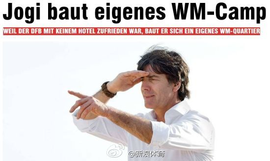

百万欧元可以建十三座别墅和一座训练场？@新浪体育:【土豪！曝德国队斥巨资建世界杯基地】兵马未动粮草先行！德国《图片报》报道，由于无法在巴西找到合适的酒店来备战世界杯，德国国家队决定斥巨资在巴西修建一座大本营！这座大本营将坐落在巴西一个海边渔村附近，附属设施包括13座别墅、训练场、媒体中心等，费用超百万欧元。网页链接 
"状元出身＂这个词。。。 @lby9 @fanguo9@马少平THU:【清华毕业生出国留学人数下降 硕博出国人数降幅大】前几天有人问清华学生出国情况，这里有个报道供参考。顺便说一下，不同的专业也是不同的，这里给出的是总体情况。 网页链接